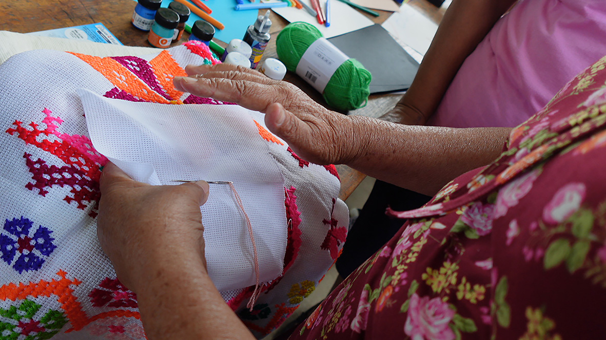
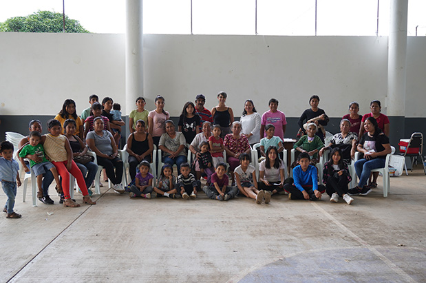
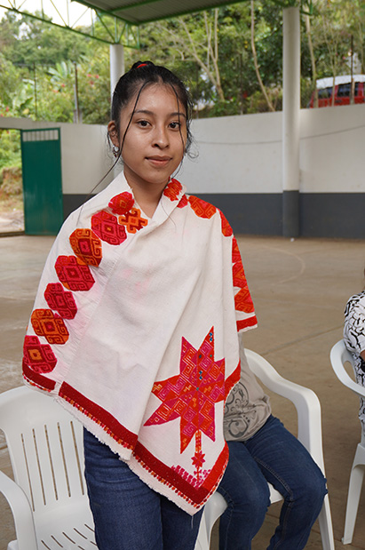

Noviembre de 2024
Estas fotos son el registro del taller realizado con la niñez nahua de la comunidad de
Uxtuapan (“pozo o sótano de agua” en náhuatl), en el municipio de Xilitla en la región sur
de la Huasteca potosina.
Un día se reunieron las abuelas a platicar con niñas y niños acerca de los recuerdos que
tenían de las danzas, la música, la lengua náhuatl y los vestidos que usaban las mujeres y
los hombres. Explicaron cómo los de antes pensaban que era el mundo donde habitan todos los
seres de la Madre tierra y porque era importante danzar los sones que tocaban.
Las abuelas enseñaron a la niñez de Uxtuapan algunos vestidos, de esos que llaman
quechquémetl en náhuatl, algo así como "quechtli" (cuello) y "tlaquémitl" (ropaje). Con
ellos pudieron explicar cuáles han sido los dibujos principales que se bordaban con aguja e
hilos, de los que resultaban, plantas, huellas de tigres, serpientes y estrellas. Este
vestido con todos sus dibujos y las cuatro puntas que lo forman, son como los rumbos del
universo: el sur, el este, el oeste y el norte.
Uno de los resultados de este taller fue la adaptación de un relato de la tradición oral y
un texto de creación llamado El quechquémetl y la serpiente de la cueva. Es para que la
gente conozca un poco de una prenda que ya casi no se realiza en la Huasteca potosina.
Agradecimientos a todas las personas que participaron en la actividad, en especial a las
niñas, los niños, las jóvenes, las abuelas y las autoridades de Uxtuapan.
Íts’ noviembre ti tamub 2024
Axe’ xi waleklabchik in tejwa’medhal an t’ojláb xi i t’aja k’al an tsakamchik dhakcham xi
k’wajilchik ti kwenchal Uxtuapan (“móm o jol ja’” ti dhakcham), ti al an bichow Xilitla tin
al an tének tsabál xi ti tsaylél ti Tampots’ots.
Jún i k’icháj tamkunchik patal an achlábchik abal ka t’ilmátschik k’al an ts’ik’áchik ani an
kwitólchik abal kin tejwa’medhachik patal a xi jaja’chik in t’ilalakchik k’al an bixnél, an
k’aniláb, an dhakchám kawintaláb ani an toltomchik xi in eyendhalakchik an mimlábchik ani an
inikchik. In t’ila’chik abal xi biyalchik in tsalpayalakchik abal ti al an k’aylál
k’wajilakchik patal an k’wajilomchik in k’al an mím tsabál ani jayétse in uluwchik jale’ ti
lej exbadh ka bixinchat an k’aniláb xi t’enchabak.
An áchlábchik in exobchi an tsakamchik xi ti Uxtuapan junchik an toltom, nixe’ xi eladh ti
quechquemitl ti dhakcham, o “quechtli” (nuk’) ani “tlaquémitl” (k’udhk’um)”. K’al nixe’chik
in wit’achik kin tsu’uw jawa’ pelak an chukláb xi in kulbetnalakchik kin chukuy k’al an
t’idhab ani an pátchik, tejwamej, an ts’ojólchik, in akan an padhum, an tsanchik ani an
ótchik. Axe’ xi lakab k’al patal in witsil ani an tse’lom akan a k’aylál: tsaylél, a kalel
k’icháj, otsel k’icháj ani a talólaj.
Jún i t’ojláb xi kalej ti al axe’ tamkuntaláb pél an ts’ejkantaláb xi t’ajchin an t’iláb xi
int’ilalchik an biyal ani an dhuchláb xi in ts’ejkachik xi in bij An quechquémetl ani an
tsan xi k’wajil ti paxál jól. Pél abal an atiklábchik kin we’ exla’ axe’ xi toltom xi yabáts
lej u ts’ejkab tin tsabálil an tének ti Tampots’ots’.
Lej k’ak’namal patal an atiklábchik xi utey abal ka t’ojon k’al wawa’, lej exbadh an
k’ak’naxtaláb abal an ts’ik’áchik, kwitólchik, ts’ik’ách uxum ani kwitól inikchik, an
áchlabchik ani an éyalchik ti Uxtuapan.
Noviembre de 2024
Ni tlaixkopinkayomej elij se amatl tlen nopa tlamachtili tlen kichijke ika nopa nawakonemej
ipan teyowali Uxtuapan (“ameli o ajostotitok ” ika nawatlajtoli), ipan nepanteyowali tlen
Xilitla ipan kuextekapan tlali sur.
Se tonali monechijkoke weyinanamej kinkamanalwijke siwapilmej wan okichpilmej tlen
kielnamiki tlen kipixtoya tlatsotsonali, wikaj tlatlatsonali, nawatlajtoli wan yoyomitl tlen
kitekiwitinenkej siwamej wan tlakamej. Kijtokej kenijkatsa katli achtowi tlen
kinejnewilitinenke nopa tlaltipaktli kampa itstoya nochi tlen itstokej ipan nana tlali wan
kenke tlawel ipati mak mijtotikaj ika nopa wikatl tlen kitsotsonayayaj.
Nopa inin weyinana kinmachtiyaya konemej tlen de Uxtuapan sekinok yoyomitl, tlen kitokaxtiya
kechkemitl ipan nahuatl, tlen kianij kej “kechtli" (cuello) wan "tlakemitl" (yoyomitl). Ika
ininjuantij welkij kiijtoke katlikej tlaixkopinkayomej tlen kichijchitinenke ika itsmalotl
wan ikpatl, tlen kichijke, tlatoktli, tlaixkopinkayomej tlen tigres, kowamej wan sitlalimej.
Ni yoyomitl ika nochi itlaixkopinkayomej wan nawitipaj iyakatenoj tlen kichijchiwa, eliyaya
ojtli tlen eltok ipan tlaltipaktli: sur, este kampa kisak tonati, oeste kampa kalaki tonati
wan norte.
Se katli itlasenkawalis tlen ni tlamachtili tlen kichijki elkij se tlatempowalistli tlen
tlajtoli wan se tlajkuiloli tlen kitokaxtiya kexkemitl wan kowatl tlen itstok ostokoj. Ni
tlen masewalmej makixmatikaj se kenki yoyomitl tlen amoyok mochijchiwa ipan kuextekapan
tlali.
Tlaskamati nochi masewalmej tlen tlapelewijke ipan ni tekitl, nojkia siwapilmej,
okichpilmej, telpokamej, weyinanamej wan tekitinij tlen Uxtuapan.
Agosto y octubre 2025
Ahuehueyo, (A: raíz de la palabra agua, huehue: anciano-viejo, yo, locativo de lugar; puede
ser lugar de agua antiguo, lugar de ahuehuetes). Municipio de Xilitla, SLP
Los encuentros en Ahuehueyo tuvieron lugar en casa de la anfitriona Catarina Hernández. Ahí
se compartieron los testimonios de las personas integrantes de la Danza Tonantzin. Mostraron
el estandarte bordado de la Virgen de Guadalupe y el quechquémetl que debe usarse para esta
danza ceremonial.
En la mesa central se colocaron otros quechquémetl (de la colección particular de Claudia
Rocha), mismos que después se pusieron sobre los hombros las niñas que asistieron a este
encuentro. Esto permitió que las mujeres mayores pudieran identificar y nombrar los bordados
del repertorio iconográfico nahua. De entre éstos destacaron la mano o huella de tigre, la
estrella y la serpiente, principalmente.
Esta actividad pudo ayudar a refrescar la memoria
de las más adultas y en el diálogo que se propició en el el grupo, se reflexionó respecto a
las pérdidas importantes que tienen los nahuas, de la música, las danzas y la vestimenta, y
porque es importante que se involucren las nuevas generaciones para dar continuidad a las
prácticas que heredaron de su rico pasado.
Íst’ agosto ani octubre ti tamub 2025
Ahuehueyo, (A tál ti káw ja’, huehue: mámláb-yejtseláb, yo, pél jún i jolataláb; walám in
le’ kin uluw ju’táj ti wa’ats an biyal ja’, jolataláb ju’táj ti wa’ats an te’ xi exladh ti
chúche’). Ti ok’bichow Xilitla, Tampots’ots’.
Tana’ ti kwenchal Ahuehueyo an tamkuntaláb t’ajan tin atáj a Catarina Hernández. Tana’ ti
t’ilmátschik in bixomabil an Tonantzin. In tejwa’medhachik an chukláb xi in kwa’al ti pejach
toltom ju’táj tin chukuychik a k’ánimim ani an dhayém xi eyendhab tam t’ajnal axe’ xi bixnél
abal an k’ak’naxtaláb.
Ti ts’ejel an mexa punuat jayej k’e’atchik i dhayémláb (in k’ál a Claudia Rocha), talbél an
ts’ik’áchik xi utey ti al an tamkuntaláb in ka’iychik. Pél antsan jant’odh ti an mimlábchik
in wit’a kin met’a ani kin exla’ an chukláb xi pél in k’ál an dhakcham. Teje’ tejwa’mej in
k’ubak o in akan an padhum, an ót ani an tsan.
Axe’ xi t’ojláb in tolmiy abal an achlábchik kin tsáb t’ilachik ani ti al an tilmáts patal
axi k’wajatak ti kwenél, in t’aja’chik ti kwentaj abal k’wajat ti k’ibel yán pilchik
in t’ajbilábil an dhakcham, an són, an bixnélchik ani an toltom, ani jayétsej jale’ ti léj
exbadh abal an ít yejélomchik kin kulbetnachik abal kin ayna k’al an biyal t’ajbiláb xi in
jilamal an biyal k’wajílomchik.
Agosto wan octubre 2025
Ahuehueyo, (A: inelwayo nawa tlajtoli atl, huehue: wewe, na, kanke eltok nopa tlali; welis
eli se wejkakiya atl, kankej eltokej awewemej). Nepanteyowali tlen Xilitla, SLP.
Nopa tlanechikoli ipan ahuehueyo mochijke ipan ichaj siwa tlayekanketl Catarina Hernández.
Nopaya mokamanalwijke tlen nopa masewalmej katli itstokej ipan tlajtsotsonali Tonantsin.
Kinextijke tlajtsonamali tlen nopa Tonantsi Guadalupe wan nopa kechkemitl tlen moneki
motekiwis ipan ni tlatsotsonali.
Sekinok kechkemitl kintlalijke ipan nopa mexa tlajkotipa (tlen katli kisentilijtok Claudia
Rocha), nopa sansej tlen teipa kintlalijke ipan inin kechtla siwapilmej tlen yajke ipan ni
tlanechikoli. Ni kinkawiliyaya siwamej tlen ya wejweyi makixmatikaj wan mak kintokaxtikaj
nopa tlajtsomali tlen eltoya ipan nopa nawatlaixkopinkayomej.
Ipan ni tlamantli monextik
imax o iikxi ocelotl, sitlali wan koatl, nochimej. Ni tekitl welkij kinpalewi mak
kinyolchikawakaj tlen ya wejweyi wan ipan nopa tlajtolsenkawalistli tlen kichijki ipan nopa
tlanechikoli, onkaj tlanejnewili katli polijtok tlawel ipati katli kipiya nopa nawamej,
wikaj tlatsotsonali, mijtotiltlatsotsotonali wan yoyomitl, wan moneki mokalakisen tlen
yankuik katli walawi kiampa tlen kimakilisen katli techin kawilijke topejkawa tlen
wejkakiya.